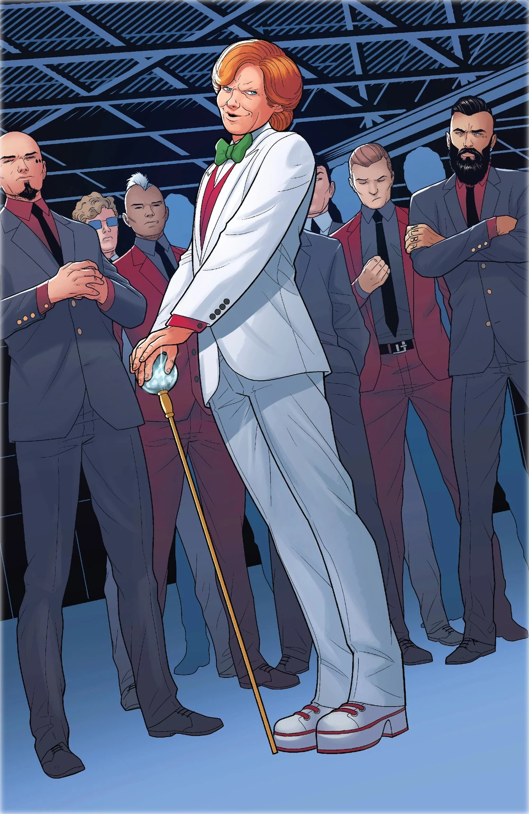

Arcade: The Deadly Game Master

Born into wealth, Arcade transforms murder into a twisted game. His genius for technology and trap design makes him one of the most dangerous assassins in the world, turning death into entertainment through his elaborate Murderworld facilities.
Origin:
- Born to wealthy parents
- Killed his father for inheritance
- Started as a carnival owner
- Built first Murderworld as a high-tech death trap
Skills:
- Genius-level intellect
- Master of robotics and AI
- Expert trap designer
- Advanced weapons engineer
- Psychological manipulation expert
Methods:
- Creates elaborate death traps
- Uses robotic duplicates of himself
- Manipulates victims into playing his games
- Broadcasts deaths for entertainment
Murderworld Features:
- Advanced holographic systems
- Deadly robotic opponents
- Environment control systems
- Reality-warping technology
- Multiple global locations
Notable Operations:
- Kidnapping of superhero teams
- Mass broadcast murder games
- Corporate assassinations
- Training facility for villains
Arcade turns murder into a spectacle, combining advanced technology with psychological warfare. His Murderworld facilities represent some of the most sophisticated death traps ever created. Despite his playful demeanor, he remains one of the most calculated and dangerous assassins in the criminal underworld.